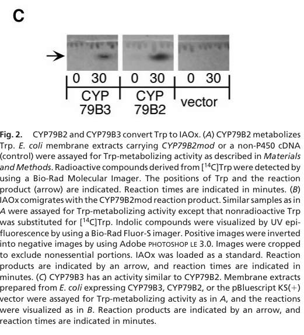

CYP79B3 (At2g22330) is an endoplasmic reticulum-anchored cytochrome P450 monooxygenase (tryptophan N-monooxygenase, EC 1.14.14.156) that converts L-tryptophan to indole-3-acetaldoxime (IAOx) using O2 and electrons supplied by NADPH-cytochrome P450 reductase. It shares about 85% amino-acid identity with its paralog CYP79B2, with which it acts redundantly. IAOx is a metabolic branch point: it is the precursor of indole glucosinolates (via CYP83B1), of the phytoalexin camalexin (via CYP71A12/A13 and CYP71B15/PAD3), and of a minor tryptophan-dependent route to indole-3-acetic acid through indole-3-acetonitrile. The cyp79b2 cyp79b3 double mutant lacks camalexin and indole glucosinolates and is partially auxin deficient. Unlike CYP79B2, CYP79B3 is not transcriptionally induced when camalexin synthesis is elicited by silver nitrate, but it responds to jasmonate, wounding and some herbivores, and is expressed in roots around lateral root primordia. Through its products it is required for resistance to fungal, oomycete and bacterial pathogens, for flg22-induced callose deposition, and for rhizobacterium-induced systemic resistance.
| GO Term | Evidence | Action | Reason |
|---|---|---|---|
|
GO:0002229
defense response to oomycetes
|
IGI
PMID:20230487 Disease resistance of Arabidopsis to Phytophthora brassicae ... |
KEEP AS NON CORE |
Summary: The cyp79B2 cyp79B3 double mutant, which lacks IAOx and hence all IAOx-derived metabolites (indole glucosinolates and camalexin), is highly susceptible to the oomycete Phytophthora brassicae, whereas single pathway-branch mutants have only minor effects.
Reason: Sound genetic evidence (IGI with CYP79B2) that CYP79B2/B3-derived indolic metabolites are needed for resistance to P. brassicae. CYP79B3 acts upstream by supplying the precursor IAOx; the antimicrobial work is done by downstream products (indole glucosinolate hydrolysis products and camalexin). Retained as a non-core, upstream physiological consequence of its catalytic role, as for CYP79B2.
Supporting Evidence:
PMID:20230487
In contrast, the double mutant cyp79B2 cyp79B3, which has a blockage in the production of indole-3-aldoxime (IAOx), the common precursor of tryptophan-derived metabolites including camalexin and iGS, is highly susceptible to P. brassicae.
|
|
GO:0004497
monooxygenase activity
|
IEA
GO_REF:0000002 |
KEEP AS NON CORE |
Summary: Generic monooxygenase activity from InterPro mapping of the cytochrome P450 domain.
Reason: Correct but uninformative parent of the experimentally established tryptophan N-monooxygenase activity (GO:0090489), which captures the core activity. Retained as a true but non-core general term, as for CYP79B2.
Supporting Evidence:
PMID:10681464
We have identified two Arabidopsis cytochrome P450s (CYP79B2 and CYP79B3) that can convert Trp to indole-3-acetaldoxime (IAOx), a precursor to IAA and indole glucosinolates.
|
|
GO:0005506
iron ion binding
|
IEA
GO_REF:0000002 |
KEEP AS NON CORE |
Summary: Iron ion binding inferred from P450 domain signatures; the heme iron is coordinated by the conserved Cys479 thiolate (by similarity).
Reason: CYP79B3 is a heme-thiolate P450; the iron is bound as part of the heme prosthetic group. The term is correct as a cofactor description but is not the core function.
Supporting Evidence:
file:ARATH/CYP79B3/CYP79B3-uniprot.txt
Name=heme; Xref=ChEBI:CHEBI:30413;
|
|
GO:0005783
endoplasmic reticulum
|
IBA
GO_REF:0000033 |
ACCEPT |
Summary: ER localization propagated across the CYP79/CYP71 clan P450 node; consistent with the N-terminal signal-anchor (TM 22-42) of CYP79B3 and with ER localization of its paralog CYP79B2.
Reason: Plant A-type P450s are ER-anchored and CYP79B3 is inside the clade; the PAINT node placement is sound. There is no direct CYP79B3 localization study beyond an old N-terminal GUS fusion report, so the IBA is the best available location statement. The paralog CYP79B2 colocalizes with ER-resident CYP71A13.
Propagation Review
Root cause:
NO FAILURE CORE
Sources checked:
PANTHER:PTN001210282
· PTN001210282
SUPPORTS TRANSFER
ER anchoring is conserved across this plant P450 node and CYP79B3 is inside the clade.
Supporting Evidence:
file:ARATH/CYP79B3/CYP79B3-deep-research-falcon.md
directed a GUS reporter to plastids, but targeting programs disagreed, and plant P450s are commonly associated with the cytosolic face of the endoplasmic-reticulum membrane
file:ARATH/CYP79B3/CYP79B3-uniprot.txt
SUBCELLULAR LOCATION: Membrane {ECO:0000305}; Single-pass membrane
|
|
GO:0006569
L-tryptophan catabolic process
|
IDA
PMID:10681464 Arabidopsis cytochrome P450s that catalyze the first step of... |
ACCEPT |
Summary: Recombinant CYP79B3 converts L-tryptophan to indole-3-acetaldoxime, a reaction that consumes tryptophan.
Reason: Conversion of Trp to IAOx is a catalytic step that removes tryptophan into secondary and hormone metabolism, so CYP79B3 directly executes a step of tryptophan catabolism as broadly defined. The more informative processes are indole glucosinolate and camalexin biosynthesis, but this term is not wrong. Same treatment as CYP79B2.
Supporting Evidence:
PMID:10681464
We have identified two Arabidopsis cytochrome P450s (CYP79B2 and CYP79B3) that can convert Trp to indole-3-acetaldoxime (IAOx), a precursor to IAA and indole glucosinolates.
|
|
GO:0006952
defense response
|
IMP
PMID:20023151 Tryptophan-derived metabolites are required for antifungal d... |
KEEP AS NON CORE |
Summary: Epistasis analysis with cyp79B2 cyp79B3 shows that indolic metabolites are required for mlo2-conditioned antifungal defense against powdery mildew and Botrytis.
Reason: Genetic necessity of CYP79B2/B3-derived metabolites for antifungal defense; CYP79B3 acts upstream by producing IAOx. Retained as non-core; the core contribution is the biosynthetic step. No more specific defense response to fungus term is proposed, because the antifungal work is done by the downstream products, not by CYP79B3.
Supporting Evidence:
PMID:20023151
Results of genetic epistasis analysis suggest a decisive role for indolic metabolites in mlo2-conditioned antifungal defense against both biotrophic powdery mildews and a camalexin-sensitive strain of the necrotrophic fungus Botrytis cinerea.
|
|
GO:0009507
chloroplast
|
ISM
GO_REF:0000122 |
MARK AS OVER ANNOTATED |
Summary: Chloroplast localization predicted by AtSubP sequence analysis.
Reason: CYP79B3 has an N-terminal signal anchor typical of ER-resident plant P450s, and its paralog CYP79B2 colocalizes with ER-resident CYP71A13. An early report that an N-terminal CYP79B3-GUS fusion reached plastids exists, but targeting predictions disagree and a truncated fusion does not establish the location of the active full-length enzyme. Treated as an over-annotation from a sequence prediction rather than removed outright, given that unresolved fusion report. (The ISM chloroplast row on CYP79B2 was removed; CYP79B2 has direct ER colocalization data that CYP79B3 lacks.)
Supporting Evidence:
file:ARATH/CYP79B3/CYP79B3-deep-research-falcon.md
directed a GUS reporter to plastids, but targeting programs disagreed, and plant P450s are commonly associated with the cytosolic face of the endoplasmic-reticulum membrane
|
|
GO:0009611
response to wounding
|
IEP
PMID:17675405 A downstream mediator in the growth repression limb of the j... |
KEEP AS NON CORE |
Summary: CYP79B3 was among transcripts that are wound-inducible in a jasmonate-dependent manner in a microarray screen (gene list; CYP79B3 not discussed in the main text).
Reason: Expression-based evidence; jasmonate inducibility of CYP79B3 is independently reported (methyl jasmonate induces CYP79B3 about 3.5-fold). The wound response is a regulatory context in which indole glucosinolate synthesis is raised, not a function of the enzyme itself. Non-core.
Supporting Evidence:
PMID:17675405
Combining the two lists produced a subset of 814 transcripts that were wound-inducible in wild-type plants but not wound-inducible in aos plants (i.e., these genes were wound-inducible in a jasmonate-dependent manner).
file:ARATH/CYP79B3/CYP79B3-deep-research-falcon.md
methyl jasmonate induced CYP79B3 transcript abundance
|
|
GO:0009617
response to bacterium
|
IMP
PMID:23073694 Metabolic and transcriptomic changes induced in Arabidopsis ... |
KEEP AS NON CORE |
Summary: cyp79B2 cyp79B3 mutants fail to mount Pseudomonas fluorescens SS101-induced resistance against Pst.
Reason: Genetic requirement for IAOx-derived metabolites in a rhizobacterium-induced response; CYP79B3 acts upstream as a biosynthetic enzyme. Non-core, as for CYP79B2.
Supporting Evidence:
PMID:23073694
Subsequent bioassays with seven Arabidopsis mutants ( myb51 , cyp79B2cyp79B3 , cyp81F2 , pen2 , cyp71A12 , cyp71A13 , and myb28myb29 ) disrupted in the biosynthesis pathways for these plant secondary metabolites showed that camalexin and glucosinolates are indeed required for the induction of Pst resistance by Pf .SS101 .
|
|
GO:0009625
response to insect
|
IEP
PMID:23144921 Water stress and aphid feeding differentially influence meta... |
KEEP AS NON CORE |
Summary: Feeding by the aphid Brevicoryne brassicae increased CYP79B3 transcripts together with indole glucosinolate and camalexin accumulation.
Reason: Expression-based response; indole glucosinolates produced downstream of CYP79B3 are established anti-herbivore metabolites, so the response is biologically plausible but non-core.
Supporting Evidence:
PMID:23144921
B. brassicae induced expression of CYP79B2 and CYP79B3 under drought and water-logged conditions, along with increased levels of 4-methoxyindol-3ylmetyl glucosinolate
|
|
GO:0009682
induced systemic resistance
|
IBA
GO_REF:0000033 |
KEEP AS NON CORE |
Summary: Induced systemic resistance propagated at a narrow CYP79B node (PTN008612649) containing CYP79B2 and CYP79B3.
Reason: The node is the CYP79B subfamily and its experimental grounding is the CYP79B2/CYP79B3 mutant data (PMID:23073694); the target appearing among the sources is expected. The term reflects an upstream requirement for IAOx-derived defense metabolites rather than the enzymatic function, so it is kept as non-core, as for CYP79B2.
Propagation Review
Root cause:
NO FAILURE CORE
Sources checked:
PANTHER:PTN008612649
· PTN008612649
SUPPORTS TRANSFER
Narrow CYP79B node grounded by the cyp79B2 cyp79B3 double-mutant ISR data; CYP79B3 is one of the two genes assayed. The transfer is sound; the term is non-core for an upstream biosynthetic enzyme.
Supporting Evidence:
PMID:23073694
Subsequent bioassays with seven Arabidopsis mutants ( myb51 , cyp79B2cyp79B3 , cyp81F2 , pen2 , cyp71A12 , cyp71A13 , and myb28myb29 ) disrupted in the biosynthesis pathways for these plant secondary metabolites showed that camalexin and glucosinolates are indeed required for the induction of Pst resistance by Pf .SS101 .
|
|
GO:0009682
induced systemic resistance
|
IMP
PMID:23073694 Metabolic and transcriptomic changes induced in Arabidopsis ... |
KEEP AS NON CORE |
Summary: Rhizobacterium (P. fluorescens SS101)-induced systemic resistance to Pst requires CYP79B2/B3-dependent camalexin and glucosinolates.
Reason: Experimental support for necessity of CYP79B2/B3 products in ISR; the enzyme acts upstream by producing IAOx. Non-core.
Supporting Evidence:
PMID:23073694
Subsequent bioassays with seven Arabidopsis mutants ( myb51 , cyp79B2cyp79B3 , cyp81F2 , pen2 , cyp71A12 , cyp71A13 , and myb28myb29 ) disrupted in the biosynthesis pathways for these plant secondary metabolites showed that camalexin and glucosinolates are indeed required for the induction of Pst resistance by Pf .SS101 .
|
|
GO:0009684
indoleacetic acid biosynthetic process
|
IMP
PMID:15772288 Sites and regulation of auxin biosynthesis in Arabidopsis ro... |
KEEP AS NON CORE |
Summary: IAA synthesis rate is reduced in roots of the cyp79B2 cyp79B3 double mutant; CYP79B3 is expressed around lateral root primordia, a site of high IAA synthesis.
Reason: CYP79B3 makes IAOx, which can be converted to IAA via IAN, so it does catalyse an early step of one (minor, Brassicales-specific) Trp-dependent IAA route. Its contribution is conditional and quantitatively small relative to the TAA1/YUCCA pathway, so the term is retained as non-core, as for CYP79B2.
Supporting Evidence:
PMID:15772288
Root-localized IAA synthesis was diminished in a cyp79B2 cyp79B3 double knockout, suggesting an important role for Trp-dependent IAA synthesis pathways in the root.
PMID:12464638
Conversely, cyp79B2 cyp79B3 double mutants have reduced levels of IAA and show growth defects consistent with partial auxin deficiency.
|
|
GO:0010112
regulation of systemic acquired resistance
|
IEP
PMID:20081042 Arabidopsis auxin mutants are compromised in systemic acquir... |
MARK AS OVER ANNOTATED |
Summary: Truman et al. 2010 linked indole-derived compounds (not auxin itself) to the establishment of systemic acquired resistance, with transcriptional data on indolic pathway genes in systemically responding leaves.
Reason: The annotation rests on expression (IEP). A change in CYP79B3 transcript during SAR does not show that a biosynthetic P450 regulates SAR; at most it supplies a precursor of indolic metabolites implicated in systemic immunity. Only the abstract is cached, so the specific data were not seen, but the evidence type cannot support a regulatory role for the enzyme.
Supporting Evidence:
PMID:20081042
our data provide compelling evidence for a role of indole-derived compounds, but not auxin itself, in the establishment and maintenance of systemic immunity
|
|
GO:0010120
camalexin biosynthetic process
|
TAS
PMID:16167893 Secondary metabolites influence Arabidopsis/Botrytis interac... |
ACCEPT |
Summary: Traceable author statement on camalexin production by the CYP79B-dependent pathway in Arabidopsis/Botrytis interactions.
Reason: CYP79B3 catalyses, redundantly with CYP79B2, the first step of camalexin biosynthesis (Trp to IAOx); the double mutant is devoid of camalexin and labelled IAOx is incorporated into camalexin. This is direct catalytic participation. CYP79B2 is the main pathogen-induced contributor, but CYP79B3 catalyses the same step.
Supporting Evidence:
PMID:16167893
Botrytis cinerea isolates showed differing sensitivity to purified camalexin, and camalexin-sensitive isolates produced larger lesions on camalexin-deficient Arabidopsis genotypes than on the wild type.
PMID:15148388
We show that camalexin, the indole phytoalexin of Arabidopsis thaliana, is synthesized from tryptophan via indole-3-acetaldoxime (IAOx) in a reaction catalyzed by CYP79B2 and CYP79B3.
|
|
GO:0016020
membrane
|
IBA
GO_REF:0000033 |
MODIFY |
Summary: Membrane localization propagated at the P450 node.
Reason: CYP79B3 is a single-pass, signal-anchored membrane protein, so the term is correct, but the membrane for this clade is the ER; endoplasmic reticulum membrane is the precise term, consistent with the ER IBA from the same node and with the CYP79B2 review.
Propagation Review
Root cause:
NO FAILURE CORE
Sources checked:
PANTHER:PTN001210282
· PTN001210282
SUPPORTS TRANSFER
Membrane anchoring is conserved across this P450 node and CYP79B3 is inside the clade; the MODIFY only sharpens the term to ER membrane, it does not dispute the transfer.
Proposed replacements:
endoplasmic reticulum membrane
Supporting Evidence:
file:ARATH/CYP79B3/CYP79B3-deep-research-falcon.md
directed a GUS reporter to plastids, but targeting programs disagreed, and plant P450s are commonly associated with the cytosolic face of the endoplasmic-reticulum membrane
file:ARATH/CYP79B3/CYP79B3-uniprot.txt
SUBCELLULAR LOCATION: Membrane {ECO:0000305}; Single-pass membrane
|
|
GO:0016020
membrane
|
IEA
GO_REF:0000044 |
MODIFY |
Summary: Membrane from UniProt subcellular location (single-pass membrane protein).
Reason: Correct but non-specific; ER-anchored plant P450s of this clade, including the paralog CYP79B2, reside in the ER membrane, so endoplasmic reticulum membrane is the appropriate term.
Proposed replacements:
endoplasmic reticulum membrane
Supporting Evidence:
file:ARATH/CYP79B3/CYP79B3-uniprot.txt
SUBCELLULAR LOCATION: Membrane {ECO:0000305}; Single-pass membrane
file:ARATH/CYP79B3/CYP79B3-deep-research-falcon.md
directed a GUS reporter to plastids, but targeting programs disagreed, and plant P450s are commonly associated with the cytosolic face of the endoplasmic-reticulum membrane
|
|
GO:0016705
oxidoreductase activity, acting on paired donors, with incorporation or reduction of molecular oxygen
|
IEA
GO_REF:0000002 |
KEEP AS NON CORE |
Summary: General paired-donor oxygenase term from P450 domain mapping.
Reason: True ancestor of tryptophan N-monooxygenase activity (GO:0090489) but uninformative; retained as non-core.
Supporting Evidence:
PMID:10681464
We have identified two Arabidopsis cytochrome P450s (CYP79B2 and CYP79B3) that can convert Trp to indole-3-acetaldoxime (IAOx), a precursor to IAA and indole glucosinolates.
|
|
GO:0016709
oxidoreductase activity, acting on paired donors, with incorporation or reduction of molecular oxygen, NAD(P)H as one donor, and incorporation of one atom of oxygen
|
IBA
GO_REF:0000033 |
MODIFY |
Summary: Paired-donor monooxygenase with NAD(P)H as one donor, propagated at the P450 node PTN001210282.
Reason: The general P450 monooxygenase function at this node is sound, but microsomal P450s such as CYP79B3 receive electrons from NADPH via NADPH-cytochrome P450 reductase (a flavoprotein); the Rhea reaction (RHEA:33279) uses reduced [NADPH--hemoprotein reductase]. In GO, tryptophan N-monooxygenase activity is_a GO:0016712 (reduced flavin or flavoprotein as one donor), not GO:0016709. Replace with GO:0016712, as done for CYP79B2.
Propagation Review
Root cause:
TERM SCOPING PROBLEM
Sources checked:
PANTHER:PTN001210282
· PTN001210282
SUPPORTS TRANSFER
The P450 monooxygenase function at this node is sound and CYP79B3 is inside the clade; only the electron-donor branch of the asserted term (NAD(P)H rather than flavoprotein reductase) is mis-scoped for microsomal P450s.
Proposed replacements:
oxidoreductase activity, acting on paired donors, with incorporation or reduction of molecular oxygen, reduced flavin or flavoprotein as one donor, and incorporation of one atom of oxygen
Supporting Evidence:
file:ARATH/CYP79B3/CYP79B3-uniprot.txt
Reaction=L-tryptophan + 2 reduced [NADPH--hemoprotein reductase] + 2 O2
|
|
GO:0019761
glucosinolate biosynthetic process
|
TAS
PMID:16167893 Secondary metabolites influence Arabidopsis/Botrytis interac... |
MODIFY |
Summary: Traceable author statement that CYP79B3 functions in glucosinolate biosynthesis, in a study using secondary-metabolite biosynthetic mutants to probe Botrytis sensitivity.
Reason: CYP79B3 catalyses, redundantly with CYP79B2, the first committed step of indole (tryptophan-derived) glucosinolate biosynthesis; it has no role in aliphatic or benzyl glucosinolate synthesis, which use CYP79F/CYP79A2. The specific term is indole glucosinolate biosynthetic process (is_a glucosinolate biosynthetic process), the same process term used for CYP79B2.
Proposed replacements:
indole glucosinolate biosynthetic process
Supporting Evidence:
PMID:15148388
These results demonstrate that only CYP79B2 and CYP79B3 contribute significantly to the IAOx pool from which camalexin and indole glucosinolates are synthesized.
PMID:16167893
Additional analysis with Arabidopsis secondary metabolite biosynthetic mutants suggests that Botrytis also has variable sensitivity to phenylpropanoids and glucosinolates.
|
|
GO:0020037
heme binding
|
IEA
GO_REF:0000002 |
KEEP AS NON CORE |
Summary: Heme binding from P450 domain signatures.
Reason: CYP79B3 is a heme-thiolate P450 (Cys479 axial ligand by similarity). The cofactor-binding term is correct but not the core function.
Supporting Evidence:
file:ARATH/CYP79B3/CYP79B3-uniprot.txt
Name=heme; Xref=ChEBI:CHEBI:30413;
|
|
GO:0042742
defense response to bacterium
|
IMP
PMID:19095898 Glucosinolate metabolites required for an Arabidopsis innate... |
KEEP AS NON CORE |
Summary: cyp79B2 cyp79B3 plants, lacking indole glucosinolates, are impaired in flg22-induced callose and in glucosinolate-dependent restriction of bacterial growth (Clay et al. 2009).
Reason: Genetic necessity of CYP79B2/B3 for an antibacterial response mediated by indole glucosinolate breakdown products (CYP81F2/PEN2 pathway). CYP79B3 acts upstream as the first biosynthetic enzyme. Non-core.
Supporting Evidence:
PMID:19095898
The IGS biosynthetic double mutant cyp79B2 cyp79B3, which completely lacks IGS (21), as well as mutants atr4-1/cyp83B1 and ugt74B1-2, were impaired in the induction of the callose response
|
|
GO:0044272
sulfur compound biosynthetic process
|
IEA
GO_REF:0000117 |
MODIFY |
Summary: Sulfur compound biosynthetic process from an ARBA rule, reflecting the CYP79 role in glucosinolate synthesis.
Reason: CYP79B3 catalyses the first committed step of indole glucosinolate biosynthesis (Trp to IAOx; the cyp79B2 cyp79B3 double mutant completely lacks indole glucosinolates). The specific term is indole glucosinolate biosynthetic process, which is_a sulfur compound biosynthetic process. Comparator check: the next enzyme, CYP83B1, carries GO:0009759, so the term is applied to the catalysing enzymes of this pathway.
Proposed replacements:
indole glucosinolate biosynthetic process
Supporting Evidence:
PMID:15148388
These results demonstrate that only CYP79B2 and CYP79B3 contribute significantly to the IAOx pool from which camalexin and indole glucosinolates are synthesized.
PMID:19095898
The IGS biosynthetic double mutant cyp79B2 cyp79B3, which completely lacks IGS (21), as well as mutants atr4-1/cyp83B1 and ugt74B1-2, were impaired in the induction of the callose response
|
|
GO:0052544
defense response by callose deposition in cell wall
|
IMP
PMID:19095898 Glucosinolate metabolites required for an Arabidopsis innate... |
KEEP AS NON CORE |
Summary: The cyp79B2 cyp79B3 double mutant is impaired in flg22-induced callose deposition.
Reason: CYP79B3 does not deposit callose; it supplies IAOx for indole glucosinolate synthesis, whose 4-methoxy derivative is hydrolysed by PEN2 to signal callose deposition. The requirement is genuine but indirect and context-dependent (Schlaeppi et al. 2010 found wild-type-like callose in cyp79B2 cyp79B3 challenged with P. brassicae). Kept as a non-core upstream annotation.
Supporting Evidence:
PMID:19095898
The IGS biosynthetic double mutant cyp79B2 cyp79B3, which completely lacks IGS (21), as well as mutants atr4-1/cyp83B1 and ugt74B1-2, were impaired in the induction of the callose response
PMID:20230487
we concluded that the lack of IAOx-derived compounds renders Arabidopsis susceptible despite wild-type-like pathogen-induced hypersensitive cell death, stress hormone signaling and callose deposition
|
|
GO:0090489
tryptophan N-monooxygenase activity
|
IEA
GO_REF:0000120 |
ACCEPT |
Summary: Tryptophan N-monooxygenase activity from Rhea/EC mapping.
Reason: Consistent with the experimentally established activity; recombinant CYP79B3 converts tryptophan to IAOx (Hull et al. 2000).
Supporting Evidence:
PMID:10681464
We have identified two Arabidopsis cytochrome P450s (CYP79B2 and CYP79B3) that can convert Trp to indole-3-acetaldoxime (IAOx), a precursor to IAA and indole glucosinolates.
file:ARATH/CYP79B3/CYP79B3-deep-research-falcon.md
found that its membrane extracts converted tryptophan into a product migrating with IAOx, whereas vector-control extracts did not
|
Q: GOA carries only an IEA for tryptophan N-monooxygenase activity on CYP79B3, although Hull et al. 2000 (PMID:10681464) assayed recombinant CYP79B3 directly and CYP79B2 has an experimental row from the same paper. Should an IDA annotation for GO:0090489 be added to CYP79B3?
Q: Where does full-length CYP79B3 reside in planta? An early N-terminal GUS fusion reportedly reached plastids, whereas the paralog CYP79B2 colocalizes with ER-resident CYP71A13.
Q: Does CYP79B3 participate in the ER camalexin metabolon with CYP71A13 and CYP71B15, as CYP79B2 does, or is it mainly a constitutive supplier of IAOx for indole glucosinolates and root IAN?
Q: What fraction of the IAOx pool comes from CYP79B3 versus CYP79B2 in different tissues and stresses, given that CYP79B2 but not CYP79B3 is induced when camalexin synthesis is elicited?
Experiment: Express full-length CYP79B3 fluorescent fusions in Arabidopsis (native promoter) with ER and plastid markers to settle its subcellular location.
Experiment: Determine CYP79B3 kinetic constants and substrate range (Trp versus Phe, Tyr and Trp analogues) with reconstituted P450 reductase, to compare it quantitatively with CYP79B2.
Experiment: Compare camalexin, indole glucosinolate and IAN levels in cyp79b2 and cyp79b3 single mutants after pathogen, jasmonate and salt treatment to quantify paralog-specific contributions.
The research report should be a detailed narrative explaining the function, biological processes, and localization of the gene product. Citations should be given for all claims.
You should prioritize authoritative reviews and primary scientific literature when conducting research. You can supplement
this with annotations you find in gene/protein databases, but these can be outdated or inaccurate.
We are specifically interested in the primary function of the gene - for enzymes, what reaction is catalyzed, and what is the substrate specificity? For transporters, what is the substrate? For structural proteins or adapters, what is the broader structural role? For signaling molecules, what is the role in the pathway.
We are interested in where in or outside the cell the gene product carries out its function.
We are also interested in the signaling or biochemical pathways in which the gene functions. We are less interested in broad pleiotropic effects, except where these elucidate the precise role.
Include evidence where possible. We are interested in both experimental evidence as well as inference from structure, evolution, or bioinformatic analysis. Precise studies should be prioritized over high-throughput, where available.
Identity verified. The requested UniProt accession Q501D8 corresponds, in the supplied annotation, to Arabidopsis thaliana CYP79B3/At2g22330, also called tryptophan N-monooxygenase 2. Independently, Hull and colleagues cloned an Arabidopsis CYP79B3 cDNA and demonstrated its activity; their CYP79B3 sequence was 85% identical to the related enzyme CYP79B2. The reported P450 sequence relationship and membrane-associated enzyme activity are consistent with the supplied cytochrome-P450 family and domain annotations. CYP79B2 is a paralog, not an alternative name for the requested protein. The locus assignment is also listed as At2g22330 in subsequent primary literature. (hull2000arabidopsiscytochromep450s pages 3-4, hull2000arabidopsiscytochromep450s pages 1-3, perez2021aldoximesareprecursors pages 15-16)
The experimentally established reaction is conversion of L-tryptophan to indole-3-acetaldoxime (IAOx), the entry intermediate of an Arabidopsis tryptophan-derived metabolic branch. The name “tryptophan N-monooxygenase” describes this CYP79-catalyzed aldoxime-forming transformation; CYP79B3 is not an IAA receptor, transporter, or enzyme that directly makes indole-3-acetic acid (IAA). Hull et al. expressed CYP79B3 in E. coli and found that its membrane extracts converted tryptophan into a product migrating with IAOx, whereas vector-control extracts did not. Their Figure 2C presents the CYP79B3, CYP79B2, and control reactions side by side. This is direct evidence for CYP79B3 activity, rather than function inferred solely from its sequence. (hull2000arabidopsiscytochromep450s pages 3-4, hull2000arabidopsiscytochromep450s media 55148994)
Substrate-specificity boundary. L-tryptophan is a demonstrated CYP79B3 substrate. The retrieved CYP79B3 experiment did not establish a comprehensive alternative-amino-acid substrate profile or CYP79B3-specific kinetic constants. Tests finding no corresponding product from tyrosine or indole, and a reported kinetic measurement, concerned CYP79B2; they should not be transferred to CYP79B3. Both paralogs share the demonstrated tryptophan-to-IAOx activity, but their relative catalytic contributions in each tissue have not been established by that assay. (hull2000arabidopsiscytochromep450s pages 3-4, mikkelsen2000cytochromep450cyp79b2 pages 3-4)
Indole glucosinolates. CYP79B3 and CYP79B2 generate the IAOx that enters the core biosynthetic pathway for tryptophan-derived indole glucosinolates, defensive compounds characteristic of crucifers. Downstream, CYP83B1 preferentially metabolizes IAOx toward glucosinolate synthesis; SUR1 acts later in formation of the glucosinolate core. In a cyp79b2 cyp79b3 double mutant, IAOx and indole glucosinolates were at or below detection in the reported experiments. The strong double-mutant effect establishes the combined enzymes’ upstream requirement, not that CYP79B3 alone accounts for all pathway flux. (kim2015indoleglucosinolatebiosynthesis pages 2-3, bak2001cyp83b1acytochrome pages 1-2, perez2021aldoximesareprecursors pages 15-16)
Camalexin and defense-related indoles. IAOx also supplies the branch toward the antimicrobial phytoalexin camalexin. CYP71A12/CYP71A13 participate in processing IAOx-derived intermediates, and CYP71B15/PAD3 acts downstream in camalexin synthesis; the double CYP79B knockout cannot accumulate camalexin under the tested conditions. In pathogen assays, the double mutant was markedly susceptible to Phytophthora brassicae despite retaining examined immune responses such as callose deposition, supporting a specific contribution of missing tryptophan-derived chemical defenses. These observations implicate the shared CYP79B2/B3 precursor step; they do not isolate a CYP79B3-only resistance effect. (frerigmann2015theroleof pages 1-3, mucha2019theformationof pages 1-2, schlaeppi2010diseaseresistanceof pages 1-2)
Auxin-related branch—important qualification. IAOx can also contribute to IAA homeostasis, potentially through indole-3-acetonitrile (IAN), and blocking its glucosinolate sink at CYP83B1 can produce high-auxin phenotypes. Conversely, the CYP79B2/B3 double mutant is only partially deficient in IAA in some studies. The predominant general IAA-biosynthetic route is instead tryptophan → indole-3-pyruvate (TAA1/TAR enzymes) → IAA (YUCCA enzymes). CYP79B3 is therefore best described as an IAOx-producing branch-point enzyme with a context-dependent contribution to auxin metabolism, not the principal IAA-synthesis enzyme. Flux into indole glucosinolates, camalexin, and IAA-related products must be distinguished from CYP79B3’s single directly observed reaction. (bak2001cyp83b1acytochrome pages 1-2, celenza2005thearabidopsisatr1 pages 1-2, soeno2024chemicalbiologyin pages 1-3)
CYP79B3 is an intracellular, membrane-associated P450: its activity was recovered from recombinant bacterial membrane extracts. That experiment does not localize native CYP79B3 within plant cells. A reported fusion containing the CYP79B3 N terminus directed a GUS reporter to plastids, but targeting programs disagreed, and plant P450s are commonly associated with the cytosolic face of the endoplasmic-reticulum membrane. The authors evaluating these observations explicitly said that further work was needed. Thus plastid targeting is suggestive, while the membrane/organellar site of active full-length native CYP79B3 remains unresolved; neither chloroplast nor ER residence should be asserted as experimentally settled. Root ER bodies discussed in recent work house downstream glucosinolate-hydrolyzing myrosinases, not demonstrably CYP79B3. (mikkelsen2002biosynthesisandmetabolic pages 6-9, mucha2019theformationof pages 1-2, basak2024erbodyresidentmyrosinases pages 1-2)
Cellular location must also be distinguished from where the gene is expressed. In a 2023 promoter-reporter study, CYP79B3 promoter activity was seen at the base of a developing lateral root and subsequently in its meristem after emergence. This identifies expressing root tissues, not the subcellular localization of CYP79B3 protein. (zelm2023cyp79b2andcyp79b3 pages 3-6)
CYP79B3 responds to defense-associated signaling. In Arabidopsis rosette leaves, methyl jasmonate induced CYP79B3 transcript abundance 3.5 ± 0.4-fold, peaking at approximately 24 hours; the ethylene precursor ACC reduced basal expression to 0.6 ± 0.1 of control and attenuated methyl-jasmonate induction. In the same study, methyl-jasmonate treatment increased the measured total indole-glucosinolate pool approximately threefold, from 3.3 ± 0.2 to 10.2 ± 0.1 nmol mg⁻¹ dry weight. These metabolite measurements reflect a whole signaling response involving multiple enzymes, not an isolated quantitative contribution of CYP79B3. (mikkelsen2003modulationofcyp79 pages 2-3, mikkelsen2003modulationofcyp79 pages 5-6)
A 2024 peer-reviewed root-microbiota study used the cyp79b2b3 double mutant as a way to remove upstream tryptophan-specialized metabolism. Its root exudates assembled bacterial communities distinct from those exposed to wild-type exudates, and most of the fungal endophytes tested strongly restricted double-mutant growth. This extends the functional relevance of the pathway to root–microbe interactions, but cannot attribute community changes to CYP79B3 alone or to one identified CYP79B3 product. It also distinguishes biosynthesis by CYP79B enzymes from subsequent glucosinolate hydrolysis by ER-body myrosinases. (basak2024erbodyresidentmyrosinases pages 1-2, basak2024erbodyresidentmyrosinases pages 8-9)
A September 2023 bioRxiv preprint, rather than an established peer-reviewed finding in the retrieved record, reported that developing roots of the double mutant had IAN concentrations near zero while measured IAA was not changed by genotype. Salt increased IAN during wild-type lateral-root emergence, and externally supplied IAN—but not indole-3-acetamide in the reported comparison—rescued aspects of the mutant’s early lateral-root phenotype. The authors reported a 15-fmol injection detection limit for camalexin, which was undetected in those root samples. These results favor a locally relevant IAOx/IAN branch under the experimental conditions; rescue does not prove that CYP79B3 directly catalyzes IAN formation or that altered bulk IAA explains the phenotype. (zelm2023cyp79b2andcyp79b3 pages 8-11)
Application status. CYP79B3 is presently most clearly useful as a research target: the combined CYP79B2/B3 knockout helps separate IAOx-derived defenses and root-exudate effects from other metabolism, while pathway-enzyme expression provides a strategy for investigating indole-glucosinolate production. The cited evidence does not establish a deployed agricultural product or a validated CYP79B3-specific intervention. Engineering conclusions drawn from other CYP79 genes or from CYP79B2 overexpression should not be presented as demonstrations for CYP79B3 itself. (kim2015indoleglucosinolatebiosynthesis pages 2-3, basak2024erbodyresidentmyrosinases pages 1-2, mikkelsen2000cytochromep450cyp79b2 pages 5-6)
The following evidence matrix separates directly established properties from paralog- or double-mutant-based inference.
| Annotation / claim | Experimental support | Limitation / evidence grade |
|---|---|---|
| CYP79B3 converts L-tryptophan to indole-3-acetaldoxime (IAOx). | Hull et al. expressed Arabidopsis CYP79B3 cDNA in E. coli. Membrane extracts generated an IAOx-comigrating product from tryptophan, unlike vector controls. Direct biochemical evidence: high confidence. (hull2000arabidopsiscytochromep450s pages 3-4, hull2000arabidopsiscytochromep450s media 55148994) | The assay established activity but did not report CYP79B3-specific kinetic constants or a comprehensive substrate panel. |
| CYP79B3 is a close CYP79B2 paralog, but CYP79B2 findings cannot automatically be assigned to CYP79B3. | CYP79B3 and CYP79B2 share 85% amino-acid identity, and both recombinant proteins convert tryptophan to IAOx. CYP79B2 did not produce detectable products from tyrosine or indole, whereas CYP79B3 was tested directly only with tryptophan. Paralogy: high confidence; broad CYP79B3 specificity: unresolved. (hull2000arabidopsiscytochromep450s pages 3-4) | CYP79B2 kinetics, inhibitor responses, overexpression phenotypes, and negative substrate tests are paralog evidence, not CYP79B3-specific measurements. |
| CYP79B2 and CYP79B3 supply the shared precursor for indole glucosinolates and camalexin. | IAOx and indole glucosinolates were at or below detection in the cyp79b2 cyp79b3 double knockout. The double mutant also fails to accumulate camalexin. Double-mutant pathway evidence: high confidence. (kim2015indoleglucosinolatebiosynthesis pages 2-3, schlaeppi2010diseaseresistanceof pages 1-2, glawischnig2007camalexin pages 2-3) | These results establish the combined requirement for CYP79B2 and CYP79B3 but do not quantify CYP79B3’s independent contribution; paralog compensation limits single-gene interpretation. |
| CYP79B3 can contribute to IAA homeostasis through the IAOx branch, but this is not the principal general IAA pathway. | Double-mutant evidence links CYP79B-derived IAOx to part of the IAA pool. Current understanding identifies TAA1/TAR-mediated tryptophan-to-IPyA conversion followed by YUCCA activity as the predominant IAA route. Conditional branch contribution: moderate-to-high confidence. (kim2015indoleglucosinolatebiosynthesis pages 2-3, soeno2024chemicalbiologyin pages 1-3, celenza2005thearabidopsisatr1 pages 1-2) | IAOx also feeds defense metabolism, and flux toward IAA varies with tissue, development, and stress. CYP79B3 should not be annotated as the sole or principal IAA-biosynthetic enzyme. |
| Native subcellular localization remains unresolved; plastid targeting is suggested but not definitive. | An N-terminal CYP79B3–GUS fusion reportedly directed GUS to plastids. This conflicts with inconsistent targeting predictions and the usual anchoring of eukaryotic plant P450s on the cytosolic face of the ER. The reviewing authors called for further localization studies. Tentative evidence. (mikkelsen2002biosynthesisandmetabolic pages 6-9, mucha2019theformationof pages 1-2) | An isolated N-terminal fusion does not establish the localization of active, full-length CYP79B3. ER bodies contain downstream myrosinases such as PYK10 and BGLU21; they are not evidence that CYP79B3 is an ER-body enzyme. (basak2024erbodyresidentmyrosinases pages 1-2) |
| CYP79B2/B3-dependent metabolites influence root microbiota assembly. | Basak et al. (2024, peer reviewed) found that cyp79b2b3 root exudates produced bacterial-community profiles distinct from wild type. The double mutant also showed altered microbial interactions and severe growth restriction with most tested fungal endophytes. Combined-pathway ecological evidence: high confidence. (basak2024erbodyresidentmyrosinases pages 1-2, basak2024erbodyresidentmyrosinases pages 8-9, basak2024erbodyresidentmyrosinases pages 2-3) | This double-mutant result does not isolate CYP79B3 from CYP79B2 or identify one CYP79B3-derived metabolite as the causal factor. |
| The IAOx-derived metabolite IAN may regulate early lateral-root growth under salt stress. | A 2023 bioRxiv preprint reported nearly absent IAN but unchanged IAA in cyp79b2/b3 root segments. Salt increased IAN in wild type, and exogenous IAN rescued early lateral-root length and salt-associated lateral-root-density defects. CYP79B3 promoter activity shifted from beneath the primordium to the emerged lateral-root meristem. Suggestive preprint evidence. (zelm2023cyp79b2andcyp79b3 pages 8-11, zelm2023cyp79b2andcyp79b3 pages 3-6) | The located record was not peer reviewed, and the phenotypes concern the double mutant rather than CYP79B3 alone. IAN rescue does not show that altered bulk IAA mediates the effect because measured IAA was unchanged by genotype. |
Table: Evidence matrix separating direct CYP79B3 biochemical findings from paralog, double-mutant, localization, and preprint-based inferences. It identifies secure annotations and important gene-specific limitations.
Bottom line: The high-confidence annotation for Arabidopsis CYP79B3/Q501D8 is L-tryptophan → indole-3-acetaldoxime, supplying a shared precursor for indole glucosinolates, camalexin, and condition-dependent auxin-related metabolism. Its precise active compartment, complete substrate range, individual kinetic parameters, and contribution relative to CYP79B2 remain less firmly resolved. (hull2000arabidopsiscytochromep450s pages 3-4, kim2015indoleglucosinolatebiosynthesis pages 2-3, mikkelsen2002biosynthesisandmetabolic pages 6-9, soeno2024chemicalbiologyin pages 1-3)
References
(hull2000arabidopsiscytochromep450s pages 3-4): Anna K. Hull, Rekha Vij, and John L. Celenza. Arabidopsis cytochrome p450s that catalyze the first step of tryptophan-dependent indole-3-acetic acid biosynthesis. Proceedings of the National Academy of Sciences of the United States of America, 97 5:2379-84, Feb 2000. URL: https://doi.org/10.1073/pnas.040569997, doi:10.1073/pnas.040569997. This article has 631 citations and is from a highest quality peer-reviewed journal.
(hull2000arabidopsiscytochromep450s pages 1-3): Anna K. Hull, Rekha Vij, and John L. Celenza. Arabidopsis cytochrome p450s that catalyze the first step of tryptophan-dependent indole-3-acetic acid biosynthesis. Proceedings of the National Academy of Sciences of the United States of America, 97 5:2379-84, Feb 2000. URL: https://doi.org/10.1073/pnas.040569997, doi:10.1073/pnas.040569997. This article has 631 citations and is from a highest quality peer-reviewed journal.
(perez2021aldoximesareprecursors pages 15-16): Veronica C. Perez, Ru Dai, Bing Bai, Breanna Tomiczek, Bryce C. Askey, Yi Zhang, Garret M. Rubin, Yousong Ding, Alexander Grenning, Anna K. Block, and Jeongim Kim. Aldoximes are precursors of auxins in arabidopsis and maize. Jun 2021. URL: https://doi.org/10.1111/nph.17447, doi:10.1111/nph.17447. This article has 43 citations and is from a highest quality peer-reviewed journal.
(hull2000arabidopsiscytochromep450s media 55148994): Anna K. Hull, Rekha Vij, and John L. Celenza. Arabidopsis cytochrome p450s that catalyze the first step of tryptophan-dependent indole-3-acetic acid biosynthesis. Proceedings of the National Academy of Sciences of the United States of America, 97 5:2379-84, Feb 2000. URL: https://doi.org/10.1073/pnas.040569997, doi:10.1073/pnas.040569997. This article has 631 citations and is from a highest quality peer-reviewed journal.
(mikkelsen2000cytochromep450cyp79b2 pages 3-4): Michael Dalgaard Mikkelsen, Carsten Hørslev Hansen, Ute Wittstock, and Barbara Ann Halkier. Cytochrome p450 cyp79b2 from arabidopsis catalyzes the conversion of tryptophan to indole-3-acetaldoxime, a precursor of indole glucosinolates and indole-3-acetic acid*. The Journal of Biological Chemistry, 275:33712-33717, Oct 2000. URL: https://doi.org/10.1074/jbc.m001667200, doi:10.1074/jbc.m001667200. This article has 601 citations.
(kim2015indoleglucosinolatebiosynthesis pages 2-3): Jeong Im Kim, Whitney L. Dolan, Nickolas A. Anderson, and Clint Chapple. Indole glucosinolate biosynthesis limits phenylpropanoid accumulation in arabidopsis thaliana. Plant Cell, 27:1529-1546, May 2015. URL: https://doi.org/10.1105/tpc.15.00127, doi:10.1105/tpc.15.00127. This article has 145 citations and is from a highest quality peer-reviewed journal.
(bak2001cyp83b1acytochrome pages 1-2): Soren Bak, Frans E. Tax, Kenneth A. Feldmann, David W. Galbraith, and Rene Feyereisen. Cyp83b1, a cytochrome p450 at the metabolic branch point in auxin and indole glucosinolate biosynthesis in arabidopsis. Plant Cell, 13:101-111, Jan 2001. URL: https://doi.org/10.1105/tpc.13.1.101, doi:10.1105/tpc.13.1.101. This article has 537 citations and is from a highest quality peer-reviewed journal.
(frerigmann2015theroleof pages 1-3): Henning Frerigmann, Erich Glawischnig, and Tamara Gigolashvili. The role of myb34, myb51 and myb122 in the regulation of camalexin biosynthesis in arabidopsis thaliana. Frontiers in Plant Science, Aug 2015. URL: https://doi.org/10.3389/fpls.2015.00654, doi:10.3389/fpls.2015.00654. This article has 80 citations.
(mucha2019theformationof pages 1-2): Stefanie Mucha, S. Heinzlmeir, V. Kriechbaumer, Benjamin Strickland, C. Kirchhelle, M. Choudhary, Natalie Kowalski, R. Eichmann, R. Hückelhoven, E. Grill, B. Kuster, and E. Glawischnig. The formation of a camalexin biosynthetic metabolon. Plant Cell, 31:2697-2710, Sep 2019. URL: https://doi.org/10.1105/tpc.19.00403, doi:10.1105/tpc.19.00403. This article has 105 citations and is from a highest quality peer-reviewed journal.
(schlaeppi2010diseaseresistanceof pages 1-2): Klaus Schlaeppi, Eliane Abou-Mansour, Antony Buchala, and Felix Mauch. Disease resistance of arabidopsis to phytophthora brassicae is established by the sequential action of indole glucosinolates and camalexin. The Plant journal : for cell and molecular biology, 62 5:840-51, Mar 2010. URL: https://doi.org/10.1111/j.1365-313x.2010.04197.x, doi:10.1111/j.1365-313x.2010.04197.x. This article has 240 citations.
(celenza2005thearabidopsisatr1 pages 1-2): John L. Celenza, Juan A. Quiel, Gromoslaw A. Smolen, Houra Merrikh, Angela R. Silvestro, Jennifer Normanly, and Judith Bender. The arabidopsis atr1 myb transcription factor controls indolic glucosinolate homeostasis. Plant Physiology, 137:253-262, Jan 2005. URL: https://doi.org/10.1104/pp.104.054395, doi:10.1104/pp.104.054395. This article has 272 citations and is from a highest quality peer-reviewed journal.
(soeno2024chemicalbiologyin pages 1-3): Kazuo SOENO, Akiko SATO, and Yukihisa SHIMADA. Chemical biology in the auxin biosynthesis pathway via indole-3-pyruvic acid. Japan Agricultural Research Quarterly: JARQ, 58:1-11, Jan 2024. URL: https://doi.org/10.6090/jarq.58.1, doi:10.6090/jarq.58.1. This article has 4 citations.
(mikkelsen2002biosynthesisandmetabolic pages 6-9): M. D. Mikkelsen, B. L. Petersen, C. E. Olsen, and B. A. Halkier. Biosynthesis and metabolic engineering of glucosinolates. Amino Acids, 22:279-295, Apr 2002. URL: https://doi.org/10.1007/s007260200014, doi:10.1007/s007260200014. This article has 206 citations and is from a peer-reviewed journal.
(basak2024erbodyresidentmyrosinases pages 1-2): Arpan Kumar Basak, Anna Piasecka, Jana Hucklenbroich, Gözde Merve Türksoy, Rui Guan, Pengfan Zhang, Felix Getzke, Ruben Garrido‐Oter, Stephane Hacquard, Kazimierz Strzałka, Paweł Bednarek, Kenji Yamada, and Ryohei Thomas Nakano. Er body-resident myrosinases and tryptophan specialized metabolism modulate root microbiota assembly. The New phytologist, 241:329-342, Sep 2024. URL: https://doi.org/10.1111/nph.19289, doi:10.1111/nph.19289. This article has 28 citations.
(zelm2023cyp79b2andcyp79b3 pages 3-6): Eva van Zelm, Iko T. Koevoets, A. Jessica Meyer, Kyra van der Velde, Thijs A. J. de Zeeuw, Francel Verstappen, Rens Holmer, Wouter Kohlen, Viola Willemsen, Charlotte M.M. Gommers, and Christa Testerink. Cyp79b2 and cyp79b3 contribute to root branching through production of the auxin precursor indole-3-acetonitrile. bioRxiv, Sep 2023. URL: https://doi.org/10.1101/2023.09.26.559630, doi:10.1101/2023.09.26.559630. This article has 5 citations.
(mikkelsen2003modulationofcyp79 pages 2-3): Michael Dalgaard Mikkelsen, Bent Larsen Petersen, Erich Glawischnig, Anders Bøgh Jensen, Erik Andreasson, and Barbara Ann Halkier. Modulation of cyp79 genes and glucosinolate profiles in arabidopsis by defense signaling pathways1. Plant Physiology, 131:298-308, Jan 2003. URL: https://doi.org/10.1104/pp.011015, doi:10.1104/pp.011015. This article has 450 citations and is from a highest quality peer-reviewed journal.
(mikkelsen2003modulationofcyp79 pages 5-6): Michael Dalgaard Mikkelsen, Bent Larsen Petersen, Erich Glawischnig, Anders Bøgh Jensen, Erik Andreasson, and Barbara Ann Halkier. Modulation of cyp79 genes and glucosinolate profiles in arabidopsis by defense signaling pathways1. Plant Physiology, 131:298-308, Jan 2003. URL: https://doi.org/10.1104/pp.011015, doi:10.1104/pp.011015. This article has 450 citations and is from a highest quality peer-reviewed journal.
(basak2024erbodyresidentmyrosinases pages 8-9): Arpan Kumar Basak, Anna Piasecka, Jana Hucklenbroich, Gözde Merve Türksoy, Rui Guan, Pengfan Zhang, Felix Getzke, Ruben Garrido‐Oter, Stephane Hacquard, Kazimierz Strzałka, Paweł Bednarek, Kenji Yamada, and Ryohei Thomas Nakano. Er body-resident myrosinases and tryptophan specialized metabolism modulate root microbiota assembly. The New phytologist, 241:329-342, Sep 2024. URL: https://doi.org/10.1111/nph.19289, doi:10.1111/nph.19289. This article has 28 citations.
(zelm2023cyp79b2andcyp79b3 pages 8-11): Eva van Zelm, Iko T. Koevoets, A. Jessica Meyer, Kyra van der Velde, Thijs A. J. de Zeeuw, Francel Verstappen, Rens Holmer, Wouter Kohlen, Viola Willemsen, Charlotte M.M. Gommers, and Christa Testerink. Cyp79b2 and cyp79b3 contribute to root branching through production of the auxin precursor indole-3-acetonitrile. bioRxiv, Sep 2023. URL: https://doi.org/10.1101/2023.09.26.559630, doi:10.1101/2023.09.26.559630. This article has 5 citations.
(mikkelsen2000cytochromep450cyp79b2 pages 5-6): Michael Dalgaard Mikkelsen, Carsten Hørslev Hansen, Ute Wittstock, and Barbara Ann Halkier. Cytochrome p450 cyp79b2 from arabidopsis catalyzes the conversion of tryptophan to indole-3-acetaldoxime, a precursor of indole glucosinolates and indole-3-acetic acid*. The Journal of Biological Chemistry, 275:33712-33717, Oct 2000. URL: https://doi.org/10.1074/jbc.m001667200, doi:10.1074/jbc.m001667200. This article has 601 citations.
(glawischnig2007camalexin pages 2-3): Erich Glawischnig. Camalexin. Feb 2007. URL: https://doi.org/10.1016/j.phytochem.2006.12.005, doi:10.1016/j.phytochem.2006.12.005. This article has 398 citations and is from a peer-reviewed journal.
(basak2024erbodyresidentmyrosinases pages 2-3): Arpan Kumar Basak, Anna Piasecka, Jana Hucklenbroich, Gözde Merve Türksoy, Rui Guan, Pengfan Zhang, Felix Getzke, Ruben Garrido‐Oter, Stephane Hacquard, Kazimierz Strzałka, Paweł Bednarek, Kenji Yamada, and Ryohei Thomas Nakano. Er body-resident myrosinases and tryptophan specialized metabolism modulate root microbiota assembly. The New phytologist, 241:329-342, Sep 2024. URL: https://doi.org/10.1111/nph.19289, doi:10.1111/nph.19289. This article has 28 citations.
(mikkelsen2003modulationofcyp79 pages 1-2): Michael Dalgaard Mikkelsen, Bent Larsen Petersen, Erich Glawischnig, Anders Bøgh Jensen, Erik Andreasson, and Barbara Ann Halkier. Modulation of cyp79 genes and glucosinolate profiles in arabidopsis by defense signaling pathways1. Plant Physiology, 131:298-308, Jan 2003. URL: https://doi.org/10.1104/pp.011015, doi:10.1104/pp.011015. This article has 450 citations and is from a highest quality peer-reviewed journal.
(zelm2023cyp79b2andcyp79b3 pages 1-3): Eva van Zelm, Iko T. Koevoets, A. Jessica Meyer, Kyra van der Velde, Thijs A. J. de Zeeuw, Francel Verstappen, Rens Holmer, Wouter Kohlen, Viola Willemsen, Charlotte M.M. Gommers, and Christa Testerink. Cyp79b2 and cyp79b3 contribute to root branching through production of the auxin precursor indole-3-acetonitrile. bioRxiv, Sep 2023. URL: https://doi.org/10.1101/2023.09.26.559630, doi:10.1101/2023.09.26.559630. This article has 5 citations.

Sources: UniProt Q501D8, GOA (25 rows), Falcon deep research
(CYP79B3-deep-research-falcon.md), cached publications, and the completed
paralog review genes/ARATH/CYP79B2/CYP79B2-ai-review.yaml (kept strictly
consistent). Module: modules/camalexin_biosynthesis.yaml, annoton
cyp79b_activity (GO:0090489, ER membrane) — this review agrees.
defense response to fungus:id: Q501D8
gene_symbol: CYP79B3
product_type: PROTEIN
status: COMPLETE
taxon:
id: NCBITaxon:3702
label: Arabidopsis thaliana
description: 'CYP79B3 (At2g22330) is an endoplasmic reticulum-anchored cytochrome P450 monooxygenase
(tryptophan N-monooxygenase, EC 1.14.14.156) that converts L-tryptophan to indole-3-acetaldoxime (IAOx)
using O2 and electrons supplied by NADPH-cytochrome P450 reductase. It shares about 85% amino-acid identity
with its paralog CYP79B2, with which it acts redundantly. IAOx is a metabolic branch point: it is the
precursor of indole glucosinolates (via CYP83B1), of the phytoalexin camalexin (via CYP71A12/A13 and
CYP71B15/PAD3), and of a minor tryptophan-dependent route to indole-3-acetic acid through indole-3-acetonitrile.
The cyp79b2 cyp79b3 double mutant lacks camalexin and indole glucosinolates and is partially auxin deficient.
Unlike CYP79B2, CYP79B3 is not transcriptionally induced when camalexin synthesis is elicited by silver
nitrate, but it responds to jasmonate, wounding and some herbivores, and is expressed in roots around
lateral root primordia. Through its products it is required for resistance to fungal, oomycete and bacterial
pathogens, for flg22-induced callose deposition, and for rhizobacterium-induced systemic resistance.'
existing_annotations:
- term:
id: GO:0002229
label: defense response to oomycetes
evidence_type: IGI
original_reference_id: PMID:20230487
qualifier: acts_upstream_of_or_within
supporting_entities:
- AGI_LocusCode:AT4G39950
review:
summary: The cyp79B2 cyp79B3 double mutant, which lacks IAOx and hence all IAOx-derived metabolites
(indole glucosinolates and camalexin), is highly susceptible to the oomycete Phytophthora brassicae,
whereas single pathway-branch mutants have only minor effects.
action: KEEP_AS_NON_CORE
reason: Sound genetic evidence (IGI with CYP79B2) that CYP79B2/B3-derived indolic metabolites are
needed for resistance to P. brassicae. CYP79B3 acts upstream by supplying the precursor IAOx; the
antimicrobial work is done by downstream products (indole glucosinolate hydrolysis products and
camalexin). Retained as a non-core, upstream physiological consequence of its catalytic role, as
for CYP79B2.
supported_by:
- reference_id: PMID:20230487
supporting_text: In contrast, the double mutant cyp79B2 cyp79B3, which has a blockage in the production
of indole-3-aldoxime (IAOx), the common precursor of tryptophan-derived metabolites including
camalexin and iGS, is highly susceptible to P. brassicae.
- term:
id: GO:0004497
label: monooxygenase activity
evidence_type: IEA
original_reference_id: GO_REF:0000002
qualifier: enables
supporting_entities:
- InterPro:IPR001128
- InterPro:IPR002401
- InterPro:IPR036396
review:
summary: Generic monooxygenase activity from InterPro mapping of the cytochrome P450 domain.
action: KEEP_AS_NON_CORE
reason: Correct but uninformative parent of the experimentally established tryptophan N-monooxygenase
activity (GO:0090489), which captures the core activity. Retained as a true but non-core general
term, as for CYP79B2.
supported_by:
- &id001
reference_id: PMID:10681464
supporting_text: We have identified two Arabidopsis cytochrome P450s (CYP79B2 and CYP79B3) that
can convert Trp to indole-3-acetaldoxime (IAOx), a precursor to IAA and indole glucosinolates.
- term:
id: GO:0005506
label: iron ion binding
evidence_type: IEA
original_reference_id: GO_REF:0000002
qualifier: enables
supporting_entities:
- InterPro:IPR001128
- InterPro:IPR002401
- InterPro:IPR017972
- InterPro:IPR036396
review:
summary: Iron ion binding inferred from P450 domain signatures; the heme iron is coordinated by the
conserved Cys479 thiolate (by similarity).
action: KEEP_AS_NON_CORE
reason: CYP79B3 is a heme-thiolate P450; the iron is bound as part of the heme prosthetic group. The
term is correct as a cofactor description but is not the core function.
supported_by:
- &id002
reference_id: file:ARATH/CYP79B3/CYP79B3-uniprot.txt
supporting_text: Name=heme; Xref=ChEBI:CHEBI:30413;
- term:
id: GO:0005783
label: endoplasmic reticulum
evidence_type: IBA
original_reference_id: GO_REF:0000033
qualifier: is_active_in
supporting_entities:
- AGI_LocusCode:AT1G16400
- AGI_LocusCode:AT1G16410
- AGI_LocusCode:AT2G40890
- AGI_LocusCode:AT3G03470
- PANTHER:PTN001210282
- UniProtKB:Q6WNR0
review:
summary: ER localization propagated across the CYP79/CYP71 clan P450 node; consistent with the N-terminal
signal-anchor (TM 22-42) of CYP79B3 and with ER localization of its paralog CYP79B2.
action: ACCEPT
reason: Plant A-type P450s are ER-anchored and CYP79B3 is inside the clade; the PAINT node placement
is sound. There is no direct CYP79B3 localization study beyond an old N-terminal GUS fusion report,
so the IBA is the best available location statement. The paralog CYP79B2 colocalizes with ER-resident
CYP71A13.
supported_by:
- &id003
reference_id: file:ARATH/CYP79B3/CYP79B3-deep-research-falcon.md
supporting_text: directed a GUS reporter to plastids, but targeting programs disagreed, and plant
P450s are commonly associated with the cytosolic face of the endoplasmic-reticulum membrane
- &id004
reference_id: file:ARATH/CYP79B3/CYP79B3-uniprot.txt
supporting_text: 'SUBCELLULAR LOCATION: Membrane {ECO:0000305}; Single-pass membrane'
propagation_review:
root_cause: NO_FAILURE_CORE
source_entities:
- source_id: PANTHER:PTN001210282
source_label: PTN001210282
source_status: SUPPORTS_TRANSFER
comment: ER anchoring is conserved across this plant P450 node and CYP79B3 is inside the clade.
- term:
id: GO:0006569
label: L-tryptophan catabolic process
evidence_type: IDA
original_reference_id: PMID:10681464
qualifier: acts_upstream_of_or_within
review:
summary: Recombinant CYP79B3 converts L-tryptophan to indole-3-acetaldoxime, a reaction that consumes
tryptophan.
action: ACCEPT
reason: Conversion of Trp to IAOx is a catalytic step that removes tryptophan into secondary and hormone
metabolism, so CYP79B3 directly executes a step of tryptophan catabolism as broadly defined. The
more informative processes are indole glucosinolate and camalexin biosynthesis, but this term is
not wrong. Same treatment as CYP79B2.
supported_by:
- *id001
- term:
id: GO:0006952
label: defense response
evidence_type: IMP
original_reference_id: PMID:20023151
qualifier: acts_upstream_of_or_within
review:
summary: Epistasis analysis with cyp79B2 cyp79B3 shows that indolic metabolites are required for mlo2-conditioned
antifungal defense against powdery mildew and Botrytis.
action: KEEP_AS_NON_CORE
reason: Genetic necessity of CYP79B2/B3-derived metabolites for antifungal defense; CYP79B3 acts upstream
by producing IAOx. Retained as non-core; the core contribution is the biosynthetic step. No more
specific defense response to fungus term is proposed, because the antifungal work is done by the
downstream products, not by CYP79B3.
supported_by:
- reference_id: PMID:20023151
supporting_text: Results of genetic epistasis analysis suggest a decisive role for indolic metabolites
in mlo2-conditioned antifungal defense against both biotrophic powdery mildews and a camalexin-sensitive
strain of the necrotrophic fungus Botrytis cinerea.
- term:
id: GO:0009507
label: chloroplast
evidence_type: ISM
original_reference_id: GO_REF:0000122
qualifier: located_in
review:
summary: Chloroplast localization predicted by AtSubP sequence analysis.
action: MARK_AS_OVER_ANNOTATED
reason: CYP79B3 has an N-terminal signal anchor typical of ER-resident plant P450s, and its paralog
CYP79B2 colocalizes with ER-resident CYP71A13. An early report that an N-terminal CYP79B3-GUS fusion
reached plastids exists, but targeting predictions disagree and a truncated fusion does not establish
the location of the active full-length enzyme. Treated as an over-annotation from a sequence prediction
rather than removed outright, given that unresolved fusion report. (The ISM chloroplast row on CYP79B2
was removed; CYP79B2 has direct ER colocalization data that CYP79B3 lacks.)
supported_by:
- *id003
- term:
id: GO:0009611
label: response to wounding
evidence_type: IEP
original_reference_id: PMID:17675405
qualifier: acts_upstream_of_or_within
review:
summary: CYP79B3 was among transcripts that are wound-inducible in a jasmonate-dependent manner in
a microarray screen (gene list; CYP79B3 not discussed in the main text).
action: KEEP_AS_NON_CORE
reason: Expression-based evidence; jasmonate inducibility of CYP79B3 is independently reported (methyl
jasmonate induces CYP79B3 about 3.5-fold). The wound response is a regulatory context in which indole
glucosinolate synthesis is raised, not a function of the enzyme itself. Non-core.
supported_by:
- reference_id: PMID:17675405
supporting_text: Combining the two lists produced a subset of 814 transcripts that were wound-inducible
in wild-type plants but not wound-inducible in aos plants (i.e., these genes were wound-inducible
in a jasmonate-dependent manner).
- reference_id: file:ARATH/CYP79B3/CYP79B3-deep-research-falcon.md
supporting_text: methyl jasmonate induced CYP79B3 transcript abundance
- term:
id: GO:0009617
label: response to bacterium
evidence_type: IMP
original_reference_id: PMID:23073694
qualifier: acts_upstream_of_or_within
review:
summary: cyp79B2 cyp79B3 mutants fail to mount Pseudomonas fluorescens SS101-induced resistance against
Pst.
action: KEEP_AS_NON_CORE
reason: Genetic requirement for IAOx-derived metabolites in a rhizobacterium-induced response; CYP79B3
acts upstream as a biosynthetic enzyme. Non-core, as for CYP79B2.
supported_by:
- &id005
reference_id: PMID:23073694
supporting_text: Subsequent bioassays with seven Arabidopsis mutants ( myb51 , cyp79B2cyp79B3 ,
cyp81F2 , pen2 , cyp71A12 , cyp71A13 , and myb28myb29 ) disrupted in the biosynthesis pathways
for these plant secondary metabolites showed that camalexin and glucosinolates are indeed required
for the induction of Pst resistance by Pf .SS101 .
- term:
id: GO:0009625
label: response to insect
evidence_type: IEP
original_reference_id: PMID:23144921
qualifier: acts_upstream_of_or_within
review:
summary: Feeding by the aphid Brevicoryne brassicae increased CYP79B3 transcripts together with indole
glucosinolate and camalexin accumulation.
action: KEEP_AS_NON_CORE
reason: Expression-based response; indole glucosinolates produced downstream of CYP79B3 are established
anti-herbivore metabolites, so the response is biologically plausible but non-core.
supported_by:
- reference_id: PMID:23144921
supporting_text: B. brassicae induced expression of CYP79B2 and CYP79B3 under drought and water-logged
conditions, along with increased levels of 4-methoxyindol-3ylmetyl glucosinolate
- term:
id: GO:0009682
label: induced systemic resistance
evidence_type: IBA
original_reference_id: GO_REF:0000033
qualifier: involved_in
supporting_entities:
- AGI_LocusCode:AT2G22330
- AGI_LocusCode:AT4G39950
- PANTHER:PTN008612649
review:
summary: Induced systemic resistance propagated at a narrow CYP79B node (PTN008612649) containing
CYP79B2 and CYP79B3.
action: KEEP_AS_NON_CORE
reason: The node is the CYP79B subfamily and its experimental grounding is the CYP79B2/CYP79B3 mutant
data (PMID:23073694); the target appearing among the sources is expected. The term reflects an upstream
requirement for IAOx-derived defense metabolites rather than the enzymatic function, so it is kept
as non-core, as for CYP79B2.
supported_by:
- *id005
propagation_review:
root_cause: NO_FAILURE_CORE
source_entities:
- source_id: PANTHER:PTN008612649
source_label: PTN008612649
source_status: SUPPORTS_TRANSFER
comment: Narrow CYP79B node grounded by the cyp79B2 cyp79B3 double-mutant ISR data; CYP79B3 is
one of the two genes assayed. The transfer is sound; the term is non-core for an upstream
biosynthetic enzyme.
- term:
id: GO:0009682
label: induced systemic resistance
evidence_type: IMP
original_reference_id: PMID:23073694
qualifier: acts_upstream_of_or_within
review:
summary: Rhizobacterium (P. fluorescens SS101)-induced systemic resistance to Pst requires CYP79B2/B3-dependent
camalexin and glucosinolates.
action: KEEP_AS_NON_CORE
reason: Experimental support for necessity of CYP79B2/B3 products in ISR; the enzyme acts upstream
by producing IAOx. Non-core.
supported_by:
- *id005
- term:
id: GO:0009684
label: indoleacetic acid biosynthetic process
evidence_type: IMP
original_reference_id: PMID:15772288
qualifier: acts_upstream_of_or_within
review:
summary: IAA synthesis rate is reduced in roots of the cyp79B2 cyp79B3 double mutant; CYP79B3 is expressed
around lateral root primordia, a site of high IAA synthesis.
action: KEEP_AS_NON_CORE
reason: CYP79B3 makes IAOx, which can be converted to IAA via IAN, so it does catalyse an early step
of one (minor, Brassicales-specific) Trp-dependent IAA route. Its contribution is conditional and
quantitatively small relative to the TAA1/YUCCA pathway, so the term is retained as non-core, as
for CYP79B2.
supported_by:
- reference_id: PMID:15772288
supporting_text: Root-localized IAA synthesis was diminished in a cyp79B2 cyp79B3 double knockout,
suggesting an important role for Trp-dependent IAA synthesis pathways in the root.
- reference_id: PMID:12464638
supporting_text: Conversely, cyp79B2 cyp79B3 double mutants have reduced levels of IAA and show
growth defects consistent with partial auxin deficiency.
- term:
id: GO:0010112
label: regulation of systemic acquired resistance
evidence_type: IEP
original_reference_id: PMID:20081042
qualifier: acts_upstream_of_or_within
review:
summary: Truman et al. 2010 linked indole-derived compounds (not auxin itself) to the establishment
of systemic acquired resistance, with transcriptional data on indolic pathway genes in systemically
responding leaves.
action: MARK_AS_OVER_ANNOTATED
reason: The annotation rests on expression (IEP). A change in CYP79B3 transcript during SAR does not
show that a biosynthetic P450 regulates SAR; at most it supplies a precursor of indolic metabolites
implicated in systemic immunity. Only the abstract is cached, so the specific data were not seen,
but the evidence type cannot support a regulatory role for the enzyme.
supported_by:
- reference_id: PMID:20081042
supporting_text: our data provide compelling evidence for a role of indole-derived compounds, but
not auxin itself, in the establishment and maintenance of systemic immunity
- term:
id: GO:0010120
label: camalexin biosynthetic process
evidence_type: TAS
original_reference_id: PMID:16167893
qualifier: acts_upstream_of_or_within
review:
summary: Traceable author statement on camalexin production by the CYP79B-dependent pathway in Arabidopsis/Botrytis
interactions.
action: ACCEPT
reason: CYP79B3 catalyses, redundantly with CYP79B2, the first step of camalexin biosynthesis (Trp
to IAOx); the double mutant is devoid of camalexin and labelled IAOx is incorporated into camalexin.
This is direct catalytic participation. CYP79B2 is the main pathogen-induced contributor, but CYP79B3
catalyses the same step.
supported_by:
- reference_id: PMID:16167893
supporting_text: Botrytis cinerea isolates showed differing sensitivity to purified camalexin, and
camalexin-sensitive isolates produced larger lesions on camalexin-deficient Arabidopsis genotypes
than on the wild type.
- &id006
reference_id: PMID:15148388
supporting_text: We show that camalexin, the indole phytoalexin of Arabidopsis thaliana, is synthesized
from tryptophan via indole-3-acetaldoxime (IAOx) in a reaction catalyzed by CYP79B2 and CYP79B3.
- term:
id: GO:0016020
label: membrane
evidence_type: IBA
original_reference_id: GO_REF:0000033
qualifier: is_active_in
supporting_entities:
- AGI_LocusCode:AT3G03470
- PANTHER:PTN001210282
- UniProtKB:Q6WNR0
review:
summary: Membrane localization propagated at the P450 node.
action: MODIFY
reason: CYP79B3 is a single-pass, signal-anchored membrane protein, so the term is correct, but the
membrane for this clade is the ER; endoplasmic reticulum membrane is the precise term, consistent
with the ER IBA from the same node and with the CYP79B2 review.
proposed_replacement_terms:
- id: GO:0005789
label: endoplasmic reticulum membrane
supported_by:
- *id003
- *id004
propagation_review:
root_cause: NO_FAILURE_CORE
source_entities:
- source_id: PANTHER:PTN001210282
source_label: PTN001210282
source_status: SUPPORTS_TRANSFER
comment: Membrane anchoring is conserved across this P450 node and CYP79B3 is inside the clade;
the MODIFY only sharpens the term to ER membrane, it does not dispute the transfer.
- term:
id: GO:0016020
label: membrane
evidence_type: IEA
original_reference_id: GO_REF:0000044
qualifier: located_in
supporting_entities:
- UniProtKB-SubCell:SL-0162
review:
summary: Membrane from UniProt subcellular location (single-pass membrane protein).
action: MODIFY
reason: Correct but non-specific; ER-anchored plant P450s of this clade, including the paralog CYP79B2,
reside in the ER membrane, so endoplasmic reticulum membrane is the appropriate term.
proposed_replacement_terms:
- id: GO:0005789
label: endoplasmic reticulum membrane
supported_by:
- *id004
- *id003
- term:
id: GO:0016705
label: oxidoreductase activity, acting on paired donors, with incorporation or reduction of molecular
oxygen
evidence_type: IEA
original_reference_id: GO_REF:0000002
qualifier: enables
supporting_entities:
- InterPro:IPR001128
- InterPro:IPR002401
- InterPro:IPR017972
- InterPro:IPR036396
review:
summary: General paired-donor oxygenase term from P450 domain mapping.
action: KEEP_AS_NON_CORE
reason: True ancestor of tryptophan N-monooxygenase activity (GO:0090489) but uninformative; retained
as non-core.
supported_by:
- *id001
- term:
id: GO:0016709
label: oxidoreductase activity, acting on paired donors, with incorporation or reduction of molecular
oxygen, NAD(P)H as one donor, and incorporation of one atom of oxygen
evidence_type: IBA
original_reference_id: GO_REF:0000033
qualifier: enables
supporting_entities:
- AGI_LocusCode:AT1G16400
- AGI_LocusCode:AT1G16410
- AGI_LocusCode:AT3G03470
- AGI_LocusCode:AT5G05260
- PANTHER:PTN001210282
review:
summary: Paired-donor monooxygenase with NAD(P)H as one donor, propagated at the P450 node PTN001210282.
action: MODIFY
reason: The general P450 monooxygenase function at this node is sound, but microsomal P450s such as
CYP79B3 receive electrons from NADPH via NADPH-cytochrome P450 reductase (a flavoprotein); the Rhea
reaction (RHEA:33279) uses reduced [NADPH--hemoprotein reductase]. In GO, tryptophan N-monooxygenase
activity is_a GO:0016712 (reduced flavin or flavoprotein as one donor), not GO:0016709. Replace
with GO:0016712, as done for CYP79B2.
proposed_replacement_terms:
- id: GO:0016712
label: oxidoreductase activity, acting on paired donors, with incorporation or reduction of molecular
oxygen, reduced flavin or flavoprotein as one donor, and incorporation of one atom of oxygen
supported_by:
- &id007
reference_id: file:ARATH/CYP79B3/CYP79B3-uniprot.txt
supporting_text: Reaction=L-tryptophan + 2 reduced [NADPH--hemoprotein reductase] + 2 O2
propagation_review:
root_cause: TERM_SCOPING_PROBLEM
source_entities:
- source_id: PANTHER:PTN001210282
source_label: PTN001210282
source_status: SUPPORTS_TRANSFER
comment: The P450 monooxygenase function at this node is sound and CYP79B3 is inside the clade;
only the electron-donor branch of the asserted term (NAD(P)H rather than flavoprotein reductase)
is mis-scoped for microsomal P450s.
- term:
id: GO:0019761
label: glucosinolate biosynthetic process
evidence_type: TAS
original_reference_id: PMID:16167893
qualifier: acts_upstream_of_or_within
review:
summary: Traceable author statement that CYP79B3 functions in glucosinolate biosynthesis, in a study
using secondary-metabolite biosynthetic mutants to probe Botrytis sensitivity.
action: MODIFY
reason: CYP79B3 catalyses, redundantly with CYP79B2, the first committed step of indole (tryptophan-derived)
glucosinolate biosynthesis; it has no role in aliphatic or benzyl glucosinolate synthesis, which use
CYP79F/CYP79A2. The specific term is indole glucosinolate biosynthetic process (is_a glucosinolate
biosynthetic process), the same process term used for CYP79B2.
proposed_replacement_terms:
- id: GO:0009759
label: indole glucosinolate biosynthetic process
supported_by:
- &id008
reference_id: PMID:15148388
supporting_text: These results demonstrate that only CYP79B2 and CYP79B3 contribute significantly
to the IAOx pool from which camalexin and indole glucosinolates are synthesized.
- reference_id: PMID:16167893
supporting_text: Additional analysis with Arabidopsis secondary metabolite biosynthetic mutants suggests
that Botrytis also has variable sensitivity to phenylpropanoids and glucosinolates.
- term:
id: GO:0020037
label: heme binding
evidence_type: IEA
original_reference_id: GO_REF:0000002
qualifier: enables
supporting_entities:
- InterPro:IPR001128
- InterPro:IPR002401
- InterPro:IPR036396
review:
summary: Heme binding from P450 domain signatures.
action: KEEP_AS_NON_CORE
reason: CYP79B3 is a heme-thiolate P450 (Cys479 axial ligand by similarity). The cofactor-binding
term is correct but not the core function.
supported_by:
- *id002
- term:
id: GO:0042742
label: defense response to bacterium
evidence_type: IMP
original_reference_id: PMID:19095898
qualifier: acts_upstream_of_or_within
review:
summary: cyp79B2 cyp79B3 plants, lacking indole glucosinolates, are impaired in flg22-induced callose
and in glucosinolate-dependent restriction of bacterial growth (Clay et al. 2009).
action: KEEP_AS_NON_CORE
reason: Genetic necessity of CYP79B2/B3 for an antibacterial response mediated by indole glucosinolate
breakdown products (CYP81F2/PEN2 pathway). CYP79B3 acts upstream as the first biosynthetic enzyme.
Non-core.
supported_by:
- &id009
reference_id: PMID:19095898
supporting_text: The IGS biosynthetic double mutant cyp79B2 cyp79B3, which completely lacks IGS
(21), as well as mutants atr4-1/cyp83B1 and ugt74B1-2, were impaired in the induction of the callose
response
- term:
id: GO:0044272
label: sulfur compound biosynthetic process
evidence_type: IEA
original_reference_id: GO_REF:0000117
qualifier: involved_in
supporting_entities:
- ARBA:ARBA00028512
review:
summary: Sulfur compound biosynthetic process from an ARBA rule, reflecting the CYP79 role in glucosinolate
synthesis.
action: MODIFY
reason: 'CYP79B3 catalyses the first committed step of indole glucosinolate biosynthesis (Trp to IAOx;
the cyp79B2 cyp79B3 double mutant completely lacks indole glucosinolates). The specific term is indole
glucosinolate biosynthetic process, which is_a sulfur compound biosynthetic process. Comparator check:
the next enzyme, CYP83B1, carries GO:0009759, so the term is applied to the catalysing enzymes of
this pathway.'
proposed_replacement_terms:
- id: GO:0009759
label: indole glucosinolate biosynthetic process
supported_by:
- *id008
- *id009
- term:
id: GO:0052544
label: defense response by callose deposition in cell wall
evidence_type: IMP
original_reference_id: PMID:19095898
qualifier: acts_upstream_of_or_within
review:
summary: The cyp79B2 cyp79B3 double mutant is impaired in flg22-induced callose deposition.
action: KEEP_AS_NON_CORE
reason: CYP79B3 does not deposit callose; it supplies IAOx for indole glucosinolate synthesis, whose
4-methoxy derivative is hydrolysed by PEN2 to signal callose deposition. The requirement is genuine
but indirect and context-dependent (Schlaeppi et al. 2010 found wild-type-like callose in cyp79B2
cyp79B3 challenged with P. brassicae). Kept as a non-core upstream annotation.
supported_by:
- *id009
- reference_id: PMID:20230487
supporting_text: we concluded that the lack of IAOx-derived compounds renders Arabidopsis susceptible
despite wild-type-like pathogen-induced hypersensitive cell death, stress hormone signaling and
callose deposition
- term:
id: GO:0090489
label: tryptophan N-monooxygenase activity
evidence_type: IEA
original_reference_id: GO_REF:0000120
qualifier: enables
supporting_entities:
- RHEA:33279
- EC:1.14.14.156
review:
summary: Tryptophan N-monooxygenase activity from Rhea/EC mapping.
action: ACCEPT
reason: Consistent with the experimentally established activity; recombinant CYP79B3 converts tryptophan
to IAOx (Hull et al. 2000).
supported_by:
- *id001
- &id010
reference_id: file:ARATH/CYP79B3/CYP79B3-deep-research-falcon.md
supporting_text: found that its membrane extracts converted tryptophan into a product migrating with
IAOx, whereas vector-control extracts did not
references:
- id: GO_REF:0000002
title: Gene Ontology annotation through association of InterPro records with GO terms
findings: []
- id: GO_REF:0000033
title: Annotation inferences using phylogenetic trees
findings: []
- id: GO_REF:0000044
title: Gene Ontology annotation based on UniProtKB/Swiss-Prot Subcellular Location vocabulary mapping,
accompanied by conservative changes to GO terms applied by UniProt
findings: []
- id: GO_REF:0000117
title: Electronic Gene Ontology annotations created by ARBA machine learning models
findings: []
- id: GO_REF:0000120
title: Combined Automated Annotation using Multiple IEA Methods
findings: []
- id: GO_REF:0000122
title: AtSubP analysis
findings: []
- id: PMID:10681464
title: Arabidopsis cytochrome P450s that catalyze the first step of tryptophan-dependent indole-3-acetic
acid biosynthesis.
findings: []
reference_review:
relevance: HIGH
correctness: VERIFIED
review_notes: Primary biochemical characterization of CYP79B3 (and CYP79B2); abstract-only in cache,
CYP79B3 assay (Fig. 2C) confirmed via deep research.
- id: PMID:12464638
title: 'Trp-dependent auxin biosynthesis in Arabidopsis: involvement of cytochrome P450s CYP79B2 and
CYP79B3.'
- id: PMID:15148388
title: Camalexin is synthesized from indole-3-acetaldoxime, a key branching point between primary and
secondary metabolism in Arabidopsis.
- id: PMID:15772288
title: Sites and regulation of auxin biosynthesis in Arabidopsis roots.
findings: []
- id: PMID:16167893
title: 'Secondary metabolites influence Arabidopsis/Botrytis interactions: variation in host production
and pathogen sensitivity.'
findings: []
- id: PMID:17675405
title: A downstream mediator in the growth repression limb of the jasmonate pathway.
findings: []
reference_review:
relevance: LOW
correctness: VERIFIED
review_notes: Microarray screen of JA-dependent wound-inducible genes; CYP79B3 is not discussed in
the main text and presumably appears in a supplementary gene list.
- id: PMID:19095898
title: Glucosinolate metabolites required for an Arabidopsis innate immune response.
findings: []
- id: PMID:20023151
title: Tryptophan-derived metabolites are required for antifungal defense in the Arabidopsis mlo2 mutant.
findings: []
- id: PMID:20081042
title: Arabidopsis auxin mutants are compromised in systemic acquired resistance and exhibit aberrant
accumulation of various indolic compounds.
findings: []
- id: PMID:20230487
title: Disease resistance of Arabidopsis to Phytophthora brassicae is established by the sequential
action of indole glucosinolates and camalexin.
findings: []
- id: PMID:23073694
title: Metabolic and transcriptomic changes induced in Arabidopsis by the rhizobacterium Pseudomonas
fluorescens SS101.
findings: []
- id: PMID:23144921
title: Water stress and aphid feeding differentially influence metabolite composition in Arabidopsis
thaliana (L.).
findings: []
- id: file:ARATH/CYP79B3/CYP79B3-deep-research-falcon.md
title: Deep research report on CYP79B3 (Falcon)
- id: file:ARATH/CYP79B3/CYP79B3-uniprot.txt
title: UniProt entry Q501D8 (CYP79B3)
core_functions:
- description: ER-anchored tryptophan N-monooxygenase that converts L-tryptophan to indole-3-acetaldoxime
(IAOx), the first committed step shared by indole glucosinolate and camalexin biosynthesis (redundantly
with CYP79B2).
molecular_function:
id: GO:0090489
label: tryptophan N-monooxygenase activity
directly_involved_in:
- id: GO:0009759
label: indole glucosinolate biosynthetic process
- id: GO:0010120
label: camalexin biosynthetic process
locations:
- id: GO:0005789
label: endoplasmic reticulum membrane
supported_by:
- *id001
- *id010
- *id006
- *id008
- *id003
suggested_questions:
- question: GOA carries only an IEA for tryptophan N-monooxygenase activity on CYP79B3, although Hull
et al. 2000 (PMID:10681464) assayed recombinant CYP79B3 directly and CYP79B2 has an experimental row
from the same paper. Should an IDA annotation for GO:0090489 be added to CYP79B3?
- question: Where does full-length CYP79B3 reside in planta? An early N-terminal GUS fusion reportedly
reached plastids, whereas the paralog CYP79B2 colocalizes with ER-resident CYP71A13.
- question: Does CYP79B3 participate in the ER camalexin metabolon with CYP71A13 and CYP71B15, as CYP79B2
does, or is it mainly a constitutive supplier of IAOx for indole glucosinolates and root IAN?
- question: What fraction of the IAOx pool comes from CYP79B3 versus CYP79B2 in different tissues and
stresses, given that CYP79B2 but not CYP79B3 is induced when camalexin synthesis is elicited?
suggested_experiments:
- description: Express full-length CYP79B3 fluorescent fusions in Arabidopsis (native promoter) with ER
and plastid markers to settle its subcellular location.
- description: Determine CYP79B3 kinetic constants and substrate range (Trp versus Phe, Tyr and Trp analogues)
with reconstituted P450 reductase, to compare it quantitatively with CYP79B2.
- description: Compare camalexin, indole glucosinolate and IAN levels in cyp79b2 and cyp79b3 single mutants
after pathogen, jasmonate and salt treatment to quantify paralog-specific contributions.